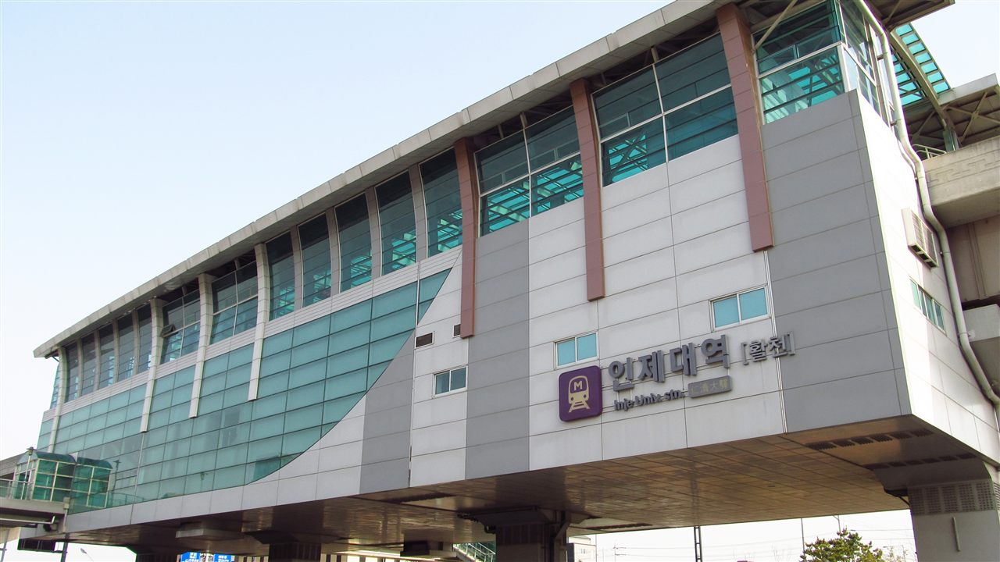

인제대학교는 1941년에 뿌리를 둔 사립대학으로, 주 캠퍼스는 경상남도 김해시에 있습니다. 부산김해경전철에 아예 ‘인제대역’이 있을 만큼 역세권 캠퍼스입니다. 의과대학과 백병원으로 잘 알려져 있고, 의예과·약학과·간호학과처럼 면허가 나오는 학과를 여럿 갖고 있다는 점이 입시에서 이 대학을 특별하게 만듭니다. 의학 계열 본과 과정과 간호 쪽은 부산 캠퍼스에서 운영됩니다.
2027학년도 수시 원서접수는 2026년 9월 7일부터 11일까지 인터넷으로만 진행돼 이미 마감됐습니다. 그래서 오늘 이 글을 읽으실 분은 대부분 고1·고2 학부모님이실 것입니다. 지금 보실 것은 경쟁률이 아니라 이 대학의 문이 어느 쪽으로 열려 있는지입니다.
수시로 92.3%를 뽑습니다
숫자부터 보겠습니다. 인제대는 2027학년도에 학생부교과 전형과 면접 전형 등 12개 전형으로 전체 모집인원의 92.3%인 1,645명을 수시에서 선발한다고 발표했습니다.
이 비율은 한 번 더 읽어 보셔야 합니다. 정시로 열리는 자리가 10명 중 1명이 채 되지 않습니다. 즉 이 대학을 목표로 둔다면 사실상 수시 하나로 간다고 보셔야 합니다. “내신이 아쉬우니 정시로 뒤집겠다”는 전략이 통하기 어려운 구조입니다.
고1·고2 가정에 이 숫자가 주는 지침은 단순합니다. 학교에서 받는 성적과 생활기록부가 거의 전부라는 것입니다. 수능 공부를 하지 말라는 뜻이 아니라, 우선순위를 헷갈리지 말라는 뜻입니다. 다만 뒤에 나올 의예과·약학과·간호학과처럼 수능최저가 걸리는 학과를 노린다면 이야기가 달라집니다.
전형이 12개 — 먼저 세 갈래로 나눠 보세요
전형이 열두 개라고 하면 막막하게 들리는데, 뽑는 방식으로 묶으면 크게 세 갈래입니다.
- 교과 성적만 보는 갈래 — 학생부교과와 지역인재Ⅱ 전형은 학생부 교과 성적 100%로 선발한다고 발표됐습니다. 면접도 서류평가도 없이 내신 하나로 갈립니다.
- 교과 + 면접 갈래 — 면접 전형은 학생부교과 70% + 면접 30%입니다. 내신이 조금 아쉬운 학생이 말로 만회할 여지가 있는 자리입니다.
- 단계별로 거르는 갈래 — 의예과·약학과·지역인재Ⅰ·지역의사 전형은 1단계에서 학생부교과 100%로 모집인원의 5배수를 거른 뒤, 2단계에서 1단계 성적 80% + 면접 20%로 최종 선발한다고 발표됐습니다.
정리하면 어느 갈래로 가든 출발점은 내신입니다. 단계별 전형조차 1단계는 교과 100%라 면접 기회 자체가 내신으로 결정됩니다. 면접 준비는 그다음 문제입니다.
다만 모집단위별 세부 인원과 교과 성적 반영 교과·과목 수, 등급 환산 방식, 면접의 형식과 평가 항목은 확인하지 못해 이 글에 담지 않았습니다. 같은 교과 전형이라도 반영 과목이 무엇이냐에 따라 내 등급이 달라지므로 요강 확인이 꼭 필요합니다.
계열모집 60.4% — 전공을 나중에 고르는 구조
2027학년도 인제대에서 눈에 띄는 변화가 이것입니다. 계열모집(전공자율선택제) 비중을 전체 모집인원의 60.4%까지 늘렸습니다. 그리고 입학한 신입생은 1학년 동안 두 차례 계열을 바꿀 기회를 갖는다고 발표됐습니다.
이게 무슨 뜻인지 풀어 보겠습니다. 예전에는 원서를 쓰는 고3 가을에 학과를 못 박아야 했습니다. 계열모집은 일단 큰 묶음으로 들어간 뒤 1학년을 겪어 보고 전공을 정하는 방식입니다. 열일곱 살에 내린 결정을 스무 살에 한 번 더 손볼 수 있는 셈입니다.
학부모님 입장에서 이 변화가 주는 실질적인 의미는 두 가지입니다. 첫째, “학과를 아직 못 정했다”가 지원을 막는 이유가 되지 않습니다. 둘째, 그래서 더 중요해지는 것이 1학년 성적입니다. 계열 변경은 보통 성적이나 정해진 기준을 보고 이뤄지므로, 들어가서 놓아 버리면 원하는 전공으로 못 갈 수 있습니다. 고등학교에서 만든 공부 습관이 대학 1학년에 바로 쓰이는 구조입니다.
※ 계열모집의 모집 단위 구성, 1학년 계열 변경의 구체적 기준과 시기, 변경 가능 범위는 확인하지 못해 이 글에 담지 않았습니다. 전공 선택 폭이 넓어 보여도 학과마다 정원과 조건이 다르므로 요강에서 확인하셔야 합니다.
지역인재 — 부산·울산·경남 전 과정 이수가 조건
인제대의 지역인재Ⅰ·Ⅱ 전형은 부산·울산·경남 지역의 중학교와 고등학교를 입학부터 졸업까지 전 과정 이수한 학생만 지원할 수 있다고 발표됐습니다.
여기서 꼭 짚고 넘어가야 할 것이 있습니다. 지역인재 자격은 고3 때 결정되는 것이 아니라 중학교 때 이미 정해져 있다는 점입니다. 많은 가정이 고2쯤 되어서야 “우리 애도 지역인재 쓸 수 있나”를 알아보시는데, 그때는 이미 바꿀 수 없는 조건입니다.
참고로 2027학년도 기준 일반적인 지역인재 요건은 ‘해당 지역 고교 3년 이수’이고, 중학교부터의 거주·이수 요건 강화는 2028학년도부터 적용됩니다. 그런데 인제대 지역인재는 보도 기준으로 중·고교 전 과정을 요구하고 있어 더 엄격합니다. 즉 대학마다 조건이 다르다는 것이 핵심이고, 반드시 지원하려는 대학의 요강에서 확인하셔야 합니다.
부산·울산·경남에 사시는 고1·고2 가정이라면 이 조건은 오히려 기회입니다. 전국 학생과 겨루는 자리보다 경쟁 범위가 좁은 문이기 때문입니다. 반대로 중학교를 다른 지역에서 다닌 경우라면 이 전형은 애초에 선택지에서 빼고 계획을 세우시는 편이 낫습니다.
지역의사전형 15명 신설 — 10년 근무 약속이 붙습니다
2027학년도의 가장 큰 뉴스는 지역의사전형 신설입니다. 15명을 모집하며, 합격해 의사가 된 뒤 의무복무지역에서 10년간 근무하기로 약속하는 조건이 붙는다고 발표됐습니다.
이 전형은 성격이 완전히 다릅니다. 보통의 입시는 ‘들어가는 조건’만 보지만, 지역의사전형은 졸업한 뒤 10년의 삶까지 포함된 선택입니다. 자리가 좁고 경쟁이 치열한 의대 문이 하나 더 열린다는 점은 분명한 기회이지만, 가족이 함께 충분히 이야기한 뒤 결정할 문제입니다. 고1·고2라면 “이런 길도 있다”를 알아 두는 것으로 충분하고, 결정은 나중에 하셔도 됩니다.
지역의사전형의 세부 지원 자격, 의무복무 지역과 조건, 위반 시 조치, 장학 지원 여부는 확인하지 못해 이 글에 담지 않았습니다. 이 전형은 특히 조건이 복잡하므로 반드시 모집요강 원문에서 확인하셔야 합니다.
수능최저 — 대부분 없고, 걸리는 곳은 확실히 걸립니다
인제대의 수능최저학력기준은 대부분의 모집단위에 적용되지 않습니다. 적용되는 곳으로 발표된 기준은 이렇습니다.
- 의예과 — 국어·영어·수학·과학탐구 4개 영역 모두 2등급 이내
- 약학과 — 4개 영역 합 9등급 이내
- 간호학과 — 2개 영역 합 7등급 이내
이 차이를 어떻게 읽어야 할까요. 의예과의 ‘모두 2등급 이내’는 한 과목만 미끄러져도 끝이라는 뜻입니다. 평균이 좋아도 약한 과목이 하나 있으면 통과하지 못합니다. 반면 약학과와 간호학과의 ‘합’ 기준은 잘 보는 과목으로 메울 여지가 있습니다.
그래서 목표가 의예과라면 고1부터 가장 약한 과목을 버리지 않는 것이 전략입니다. 간호학과처럼 합 기준이면 확실히 잘하는 두 과목을 만드는 것이 전략입니다. 같은 ‘수능최저’라는 말이지만 공부 계획이 정반대로 갈립니다.
그리고 수능최저가 없는 학과를 노린다면 결론은 더 단순합니다. 내신이 거의 전부입니다. 학교 시험을 가볍게 보면 안 되는 이유가 여기 있습니다.
※ 수능최저가 적용되는 모집단위의 전체 목록, 탐구 영역 반영 방식(1과목·2과목 평균 여부), 한국사 기준, 영어 등급 환산 방식은 확인하지 못해 이 글에 담지 않았습니다. 기사에 언급된 글로컬리더스학부처럼 추가로 최저가 걸리는 모집단위가 있을 수 있으므로 반드시 요강에서 확인해 주세요.
지원 전 체크리스트 — 고1·고2가 지금 할 일
- 지역인재 자격부터 확인하세요. 중학교를 어디서 다녔는지로 이미 갈립니다. 부산·울산·경남이면 큰 카드가 하나 더 있는 것이고, 아니면 계획에서 빼야 합니다.
- 내신을 1순위에 두세요. 교과 100% 전형이 있고, 단계별 전형도 1단계는 교과 100%입니다. 면접은 내신으로 통과한 사람만 보는 것입니다.
- 수능최저가 걸리는 학과인지 먼저 보세요. 걸린다면 약한 과목부터 손봐야 하고, 안 걸린다면 학교 시험에 더 쏟는 편이 효율적입니다.
- 면접 전형은 말하기 연습이 필요합니다. 면접 30%는 작지 않습니다. 생활기록부에 적힌 내용을 자기 말로 설명하는 연습을 고2 겨울부터 조금씩 해 두면 충분합니다.
- 계열모집으로 들어간다면 1학년 성적이 전공을 정합니다. “대학 가면 놀아도 된다”가 통하지 않는 구조라는 점을 미리 알려 주세요.
- 원서접수는 매년 9월 초입니다. 2027학년도는 9월 7~11일이었습니다. 고2 2학기 성적까지가 사실상 마지막 내신이라는 뜻입니다.
마무리 — 결국 학교 시험으로 돌아옵니다
인제대의 2027학년도 변화를 한 줄로 줄이면 이렇습니다. 뽑는 길은 넓어지고(계열모집·지역의사 신설), 뽑는 기준은 내신으로 모였습니다. 전형이 열두 개라도 출발점은 하나입니다.
그래서 고1·고2가 지금 해야 할 일은 전형을 외우는 것이 아닙니다. 이번 학기 시험에서 한 등급을 지키는 것입니다. 전형 분석은 고3 여름에 몰아서 해도 늦지 않지만, 내신은 지나간 학기를 다시 볼 수 없습니다.
가장 피해야 할 것은 아무것도 정하지 않은 채 내신·수능·비교과를 조금씩 하는 것입니다. 수능최저가 없는 전형이 많은 대학에서는 어중간한 내신이 가장 설 자리가 없습니다.
와와 학습코칭센터에서는 아이의 학년과 성적 흐름에 맞춰 목표 대학과 전형을 함께 정리해 드립니다. 교과로 갈지 면접을 쓸지, 지역인재를 쓸 수 있는지부터 막막하시다면 가까운 센터에서 상담을 신청해 보세요.
※ 본 글은 인제대학교 2027학년도 수시모집 관련 언론 보도와 공개 자료를 바탕으로 정리했습니다. 인용한 모집 인원·비율·일정과 전형 변화는 보도 시점에 발표된 내용입니다. 모집단위별 세부 모집 인원, 교과 성적 반영 교과·과목 수와 등급 환산 방식, 진로선택과목 반영 방법, 면접의 형식·평가 항목·시험일, 지역인재Ⅰ과 Ⅱ의 차이와 세부 지원 자격, 지역의사전형의 의무복무 지역·조건·위반 시 조치, 수능최저가 적용되는 모집단위 전체 목록과 탐구 반영 방식·한국사 기준, 계열모집의 모집 단위 구성과 1학년 계열 변경 기준, 학생부종합 서류평가의 항목과 비율, 전형별·학과별 경쟁률, 장학금 제도는 확인하지 못해 이 글에 담지 않았습니다. 확인되지 않은 숫자와 기준은 기재하지 않았습니다. 사진은 인제대학교 김해캠퍼스 인근의 부산김해경전철 인제대역을 촬영한 것으로, 대학 캠퍼스 건물 자체가 아니며 현재 모습과 다를 수 있습니다. 세부 사항은 모집요강에서 확정되며 변경될 수 있으므로, 반드시 인제대학교 입학처의 2027학년도 수시모집요강 원문에서 본인 지원 모집단위 기준으로 최종 확인하시기 바랍니다.